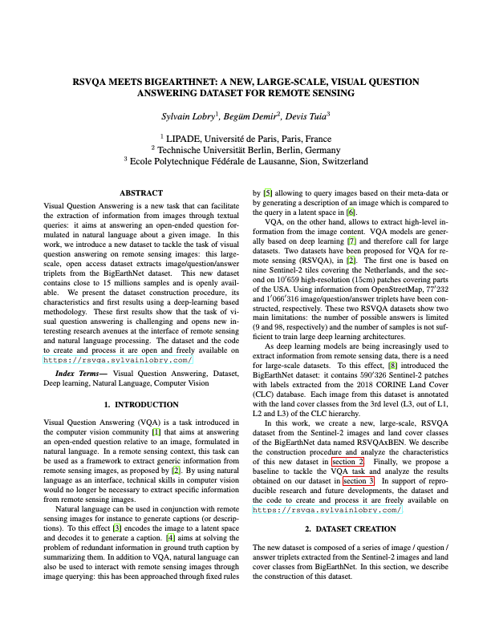
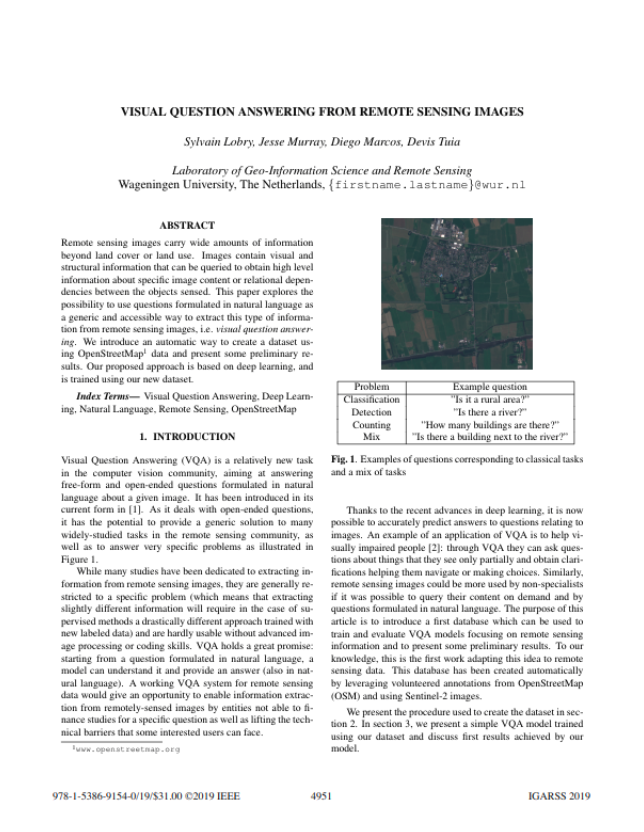

This page presents the RSVQA project, and contains links to the datasets and code used in the following papers:

RSVQA meets BigEarthNet: a new, large-scale, visual question answering dataset for remote sensing, Sylvain Lobry, Begüm Demir, Devis Tuia, International Geoscience and Remote Sensing Symposium (IGARSS) 2021. pre-print
RSVQA: Visual Question Answering for Remote Sensing Data, Sylvain Lobry, Diego Marcos, Jesse Murray, Devis Tuia, IEEE Transactions on Geoscience and Remote Sensing, 2020. pre-print

Visual Question Answering from Remote Sensing Images, Sylvain Lobry, Jesse Murray, Diego Marcos, Devis Tuia, International Geoscience and Remote Sensing Symposium (IGARSS) 2019. IEEE Library
Remote sensing images contain a wealth of information which can be useful for a wide range of tasks including land cover classification, object counting or detection. However, most of the available methodologies are task-specific, thus inhibiting generic and easy access to the information contained in remote sensing data. As a consequence, accurate remote sensing product generation still requires expert knowledge. With Visual Question Answering for Remote Sensing (RSVQA), we propose a system to extract information from remote sensing data that is accessible to every user: we use questions formulated in natural language and use them to interact with the images. With the system, images can be queried to obtain high level information specific to the image content or relational dependencies between objects visible in the images. Using an automatic method introduced in the articles above, we built two datasets (using low and high resolution data) of image/question/answer triplets. The information required to build the questions and answers is queried from OpenStreetMap (OSM).
On this page, we display some examples from the train sets presented in the papers above, and make the datasets and the code available. If you use them, please cite the TGRS paper above.
Email (for Sylvain Lobry only): firstname.lastname at u-paris.fr
This work was partly funded by CNES under the R&T project "Application des techniques de Visual Question Answering a des données d'imagerie satellitaire"